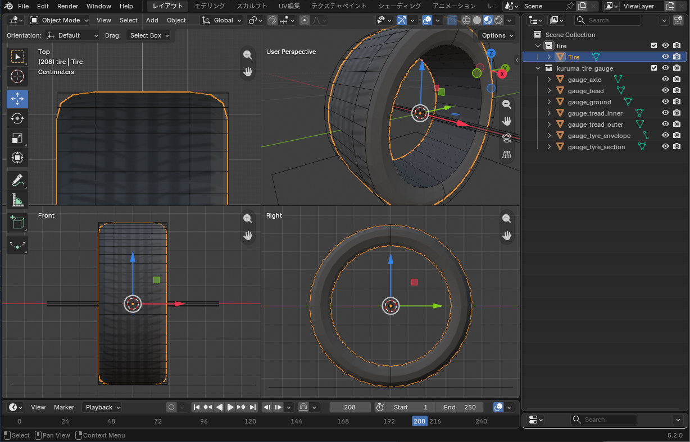

The tyre model, and tyres that change grip on each surface.タイヤのモデルと、路面ごとのグリップが変わるタイヤの部品。
カーパックでタイヤを用意しなければ、KurumaMod 標準のタイヤ（ノーマル）が自動で付きます。このガイドは、自分でタイヤをデザインしたい人のためのものです。
If your car pack has no tyre of its own, KurumaMod's standard tyre (Normal) is fitted automatically. This guide is for those who want to design their own tyre.
タイヤを Blender で作り、OBJ に書き出すまでです。タイヤはホイールとも車体とも別のファイルで作ります。
This chapter takes a tyre from Blender to an exported OBJ. Tyres are built in a separate file from both the wheel and the body.
Scripting タブで modeling_tools/blender_tire_gauge.py を実行する。同梱のノーマルタイヤの寸法（外径 0.45m・内径 0.334m・幅 0.38m）で、外形の円柱・内径の円柱・踏面の幅・断面・車軸の線・地面が置かれるassets/mypack/models/entity/my_tire.obj（.mtl も一緒に）と assets/mypack/textures/entity/my_tire.pngこれで、タイヤのモデルができました。換装画面で選べるようにするのは2 章です。
modeling_tools/blender_tire_gauge.py from the Scripting tab. Sized after the bundled normal tyre (0.45 m outer radius, 0.334 m inner radius, 0.38 m wide), it places the outer cylinder, the inner cylinder, the tread width, the section, the axle line and the groundassets/mypack/models/entity/my_tire.obj (with its .mtl) and assets/mypack/textures/entity/my_tire.pngThe tyre model is done. To make it selectable in the parts screen, go to chapter 2.

tire.obj）をタイヤのゲージ（blender_tire_gauge.py）に重ねたところ。タイヤは外形の円柱に収め、ビードを内径の円柱の両端に合わせます。タイヤだけの別ファイルで作り、ホイールは入れません。ゲージのオブジェクト（gauge_…）は書き出しても描かれませんtire.obj) laid over the tyre gauge (blender_tire_gauge.py). Keep the tyre inside the outer cylinder and put its beads on the ends of the inner cylinder. Model the tyre alone in its own file, without a wheel. Gauge objects (gauge_…) are not drawn even if exported.内径と外径はメッシュから測るので、書かなくてかまいません。選んだタイヤは、内径がホイールのリムへ、外径が車のタイヤ半径へ来るように伸び縮みして描かれます。リムの大きいホイールほどサイドウォールが薄くなります。換装画面の「太さ」は、ホイールとタイヤに一緒に効きます。
The inner and outer radii are measured from the mesh, so you need not write them. The picked tyre is stretched so its inner edge sits on the wheel's rim and its outer edge at the car's tyre radius; bigger rims get thinner sidewalls. The parts screen's Width slider acts on the wheel and tyre together.
タイヤの内径（ビード）を置く半径は、次の順に決まります。
rimRadius（メッシュの寸法・m）が書いてあれば、その値Tire。リムだけで作る前の作り方）の内径位置が合わないときは、ホイールの見た目のファイル assets/mypack/car_parts/my_wheel.json の wheel に rimRadius を書きます:
{
"wheel": {
"model": "mypack:models/entity/my_wheel.obj",
"texture": "mypack:textures/entity/my_wheel.png",
"rimRadius": 0.33
}
}The radius where the tyre's inner edge (bead) sits is chosen in this order:
rimRadius in the wheel's looks file, if written (mesh units, m)Tire, the older way of building wheels)If tyres sit wrong, add rimRadius under wheel in the wheel's looks file assets/mypack/car_parts/my_wheel.json:
{
"wheel": {
"model": "mypack:models/entity/my_wheel.obj",
"texture": "mypack:textures/entity/my_wheel.png",
"rimRadius": 0.33
}
}tire で始まる名前の別オブジェクトなら描かれない"tire" に innerRadius / outerRadius（メッシュのタイヤの内径・外径 [m]）を書くtire is not drawninnerRadius / outerRadius (the mesh tyre's inner and outer radius [m]) inside the tyre's "tire"ダート用・オフロード用のような、走りが変わるタイヤを作ります。タイヤはホイールとは別の部品で、路面ごとのグリップが変わります。
Make a tyre that changes how the car drives, such as a gravel or mud-terrain tyre. Tyres are a separate part from wheels, and they change grip on each surface.
assets/mypack/models/entity/my_tire.obj と assets/mypack/textures/entity/my_tire.png に置いたとするassets/mypack/car_parts/my_tire.json（部品と同じファイル名）。必ず "tire" の中に書く:
{
"tire": {
"model": "mypack:models/entity/my_tire.obj",
"texture": "mypack:textures/entity/my_tire.png"
}
}data/mypack/car_parts/my_tire.json（ファイル名が部品名）:
{
"slot": "tire",
"tire": {
"grip": { "paved": 0.90, "gravel": 1.20 }
}
}"part.mypack.my_tire": "マイタイヤ"これで、ゲームの G →「パーツ」→「タイヤ」のタブに並びます。数字はノーマルタイヤに対する倍率で、この例は舗装で 0.9 倍・砂利で 1.2 倍のグリップです。
assets/mypack/models/entity/my_tire.obj and assets/mypack/textures/entity/my_tire.pngassets/mypack/car_parts/my_tire.json (same file name as the part). Always write it inside "tire":
{
"tire": {
"model": "mypack:models/entity/my_tire.obj",
"texture": "mypack:textures/entity/my_tire.png"
}
}data/mypack/car_parts/my_tire.json (the file name is the part name):
{
"slot": "tire",
"tire": {
"grip": { "paved": 0.90, "gravel": 1.20 }
}
}"part.mypack.my_tire": "My Tyres"It now appears under G → "Parts" → the "Tyres" tab. The numbers are ratios to the Normal tyre; this one has 0.9× grip on tarmac and 1.2× on gravel.
できあがりの形:
What you end up with:
mypack.jar
├── assets/ ← 見た目
│ └── mypack/
│ ├── car_parts/
│ │ └── my_tire.json ← 見た目のファイル（"tire" の中）
│ ├── lang/
│ │ ├── en_us.json ← "part.mypack.my_tire"
│ │ └── ja_jp.json
│ ├── models/
│ │ └── entity/
│ │ ├── my_tire.obj
│ │ └── my_tire.mtl
│ └── textures/
│ └── entity/
│ └── my_tire.png
└── data/ ← 素性
└── mypack/
├── car_parts/
│ └── my_tire.json ← 部品のファイル（"slot": "tire" と性能）
└── cars/
└── <車>.json ← 純正にするなら default_parts.tire（任意）mypack.jar
├── assets/ <- looks
│ └── mypack/
│ ├── car_parts/
│ │ └── my_tire.json <- looks file (inside "tire")
│ ├── lang/
│ │ ├── en_us.json <- "part.mypack.my_tire"
│ │ └── ja_jp.json
│ ├── models/
│ │ └── entity/
│ │ ├── my_tire.obj
│ │ └── my_tire.mtl
│ └── textures/
│ └── entity/
│ └── my_tire.png
└── data/ <- what it is
└── mypack/
├── car_parts/
│ └── my_tire.json <- part file ("slot": "tire" and performance)
└── cars/
└── <car>.json <- default_parts.tire to make it stock (optional)assets/ と data/ の car_parts/ に、同じファイル名で 1 つずつ置きます。
One file each in the car_parts/ folders of assets/ and data/, with the same file name.
1 章（モデル）と、下の手順の 1・2 を飛ばし、部品のファイルと lang だけを置きます。見た目は KurumaMod 標準のタイヤになります。
Skip chapter 1 (the model) and steps 1–2 below, and add only the part file and lang. It looks like KurumaMod's standard tyre.
書ける項目はこれで全部です。どれもノーマルタイヤに対する倍率で、書かなかったものは 1 です。
{
"slot": "tire",
"tire": {
"stiffness": 0.85,
"grip": { "paved": 0.88, "dirt": 1.20, "gravel": 1.25, "sand": 1.10, "snow": 1.10 },
"rolling": { "paved": 1.15 }
}
}grip … その路面でのグリップrolling … その路面での転がり抵抗。大きいほど進みにくいstiffness … 舵を切ってから力が立ち上がるまでの鋭さ。ブロックの大きいタイヤほど小さくするpaved（舗装）・dirt（土・草）・gravel（砂利）・sand（砂）・snow（雪）・ice（氷）同梱のタイヤの値と、既定の車での効き目（比べる目安）:
| stiffness | grip | rolling | 効き目 | |
|---|---|---|---|---|
| ノーマル | 1 | すべて 1 | すべて 1 | 舗装の横 G 0.93・砂利 0.62・砂 0.48 |
| ダート | 0.85 | 舗装 0.88・土 1.20・砂利 1.25・砂 1.10・雪 1.10 | 舗装 1.15 | 舗装 0.84・砂利 0.77・砂 0.54。砂利の制動 31.9→25.7m |
| オフロード | 0.75 | 舗装 0.80・土 1.15・砂利 1.10・砂 1.35・雪 1.25・氷 1.05 | 舗装 1.40・土 0.85・砂 0.70・雪 0.80 | 舗装 0.77・砂利 0.68・砂 0.68。砂の 0-100 7.15→6.18 秒 |
どの路面でも強いタイヤは作らないでください。得意な路面があれば苦手な路面がある、のがタイヤを選ぶ意味です。
These are all the keys. Every number is a ratio to the Normal tyre, and anything left out is 1.
{
"slot": "tire",
"tire": {
"stiffness": 0.85,
"grip": { "paved": 0.88, "dirt": 1.20, "gravel": 1.25, "sand": 1.10, "snow": 1.10 },
"rolling": { "paved": 1.15 }
}
}grip — grip on that surfacerolling — rolling resistance on that surface. Bigger means harder to keep movingstiffness — how sharply force builds once you steer. Lower it for chunky treadpaved, dirt (dirt and grass), gravel, sand, snow, iceThe shipped tyres, and what they do on the default car, for reference:
| stiffness | grip | rolling | Effect | |
|---|---|---|---|---|
| Normal | 1 | all 1 | all 1 | lateral g 0.93 paved, 0.62 gravel, 0.48 sand |
| Gravel | 0.85 | paved 0.88, dirt 1.20, gravel 1.25, sand 1.10, snow 1.10 | paved 1.15 | 0.84 paved, 0.77 gravel, 0.54 sand. Gravel braking 31.9→25.7 m |
| Mud terrain | 0.75 | paved 0.80, dirt 1.15, gravel 1.10, sand 1.35, snow 1.25, ice 1.05 | paved 1.40, dirt 0.85, sand 0.70, snow 0.80 | 0.77 paved, 0.68 gravel, 0.68 sand. Sand 0–100 7.15→6.18 s |
Please don't make a tyre that wins everywhere. A tyre that is good somewhere should be worse somewhere else; that is what makes the choice matter.
ホイールと同じく、data/mypack/car_parts/my_tire.json に cars と order を書けます（ホイールの 2 章）。
{
"slot": "tire",
"order": 30,
"cars": ["mypack:kei"],
"tire": { "grip": { "paved": 0.90, "gravel": 1.20 } }
}As with wheels, cars and order go in data/mypack/car_parts/my_tire.json (chapter 2 of the Wheel guide).
{
"slot": "tire",
"order": 30,
"cars": ["mypack:kei"],
"tire": { "grip": { "paved": 0.90, "gravel": 1.20 } }
}"tire": { ... } が書かれていない（ログに出る）"tire": { ... } の中に書いていない。または assets/ 側のファイル名が data/ 側と違う"tire": { ... } is missing (the log says so)"tire": { ... }, or the assets/ file name differs from the data/ one見落としやすいところを並べます。症状が出てから探すときは配布の 3 章へ。
What is easy to miss. If something is already wrong, go to chapter 3 of Shipping.
data/）に "slot": "tire" と "tire": { ... } を書いたassets/）は "tire" の中に書き、ファイル名を部品と同じにしたdata/) has "slot": "tire" and "tire": { ... }assets/) is written inside "tire" and has the same file name as the partdata/<pack>/car_parts/<part>.json| キー | 型 | 既定値 | 意味 |
|---|---|---|---|
slot | 文字列 | 必須 | "tire" |
order | 整数 | 100 | 換装画面に並ぶ順 |
cars | 車種 id の配列 | （すべての車種） | 付けられる車種。読める値が 1 つも無ければ、その部品は捨てられる |
tire.stiffness | 数字 | 1 | 横・縦の剛性の倍率（よれやすさ。0.3〜3.0） |
tire.grip.<路面> | 数字 | 1 | その路面でのグリップの倍率。路面は paved・dirt・gravel・sand・snow・ice |
tire.rolling.<路面> | 数字 | 1 | その路面での転がり抵抗の倍率 |
data/<pack>/car_parts/<part>.json| Key | Type | Default | Meaning |
|---|---|---|---|
slot | string | required | "tire" |
order | integer | 100 | Position in the parts screen |
cars | array of car ids | (every car) | Which cars can fit it. If none of the values can be read, the part is dropped |
tire.stiffness | number | 1 | Scale on lateral and longitudinal stiffness (tread squirm; 0.3 to 3.0) |
tire.grip.<surface> | number | 1 | Grip on that surface. Surfaces: paved, dirt, gravel, sand, snow, ice |
tire.rolling.<surface> | number | 1 | Rolling resistance on that surface |
assets/<pack>/car_parts/<part>.json（"tire": { ... } の中。いちばん外側には書けない）| キー | 型 | 既定値 | 意味 |
|---|---|---|---|
model | id | KurumaMod 標準のタイヤ | タイヤの OBJ（タイヤだけ。原点は車軸の中心） |
texture | id | kurumamod:textures/entity/tire.png | タイヤのテクスチャ |
innerRadius | 数字 | （測る） | メッシュのタイヤの内径 [m]。測った値がおかしいときだけ書く |
outerRadius | 数字 | （測る） | メッシュのタイヤの外径 [m]。同上 |
assets/<pack>/car_parts/<part>.json (inside "tire": { ... }; not at the top level)| Key | Type | Default | Meaning |
|---|---|---|---|
model | id | KurumaMod's own tyre | Tyre OBJ (tyre only, origin at the axle centre) |
texture | id | kurumamod:textures/entity/tire.png | Tyre texture |
innerRadius | number | (measured) | The mesh's inner tyre radius [m]. Only write it if the measured one is wrong |
outerRadius | number | (measured) | The mesh's outer tyre radius [m]. Likewise |
data/<pack>/cars/<car>.json のいちばん外側| キー | 型 | 意味 |
|---|---|---|
default_parts.tire | 部品 id | その車の純正のタイヤ。書かなければ kurumamod:tire_normal |
data/<pack>/cars/<car>.json| Key | Type | Meaning |
|---|---|---|
default_parts.tire | part id | The car's stock tyre. Left out, kurumamod:tire_normal |
KurumaMod — 諸元の全項目は車の付録 A。ゲージスクリプトは modeling_tools/blender_gauge.py・modeling_tools/blender_wheel_gauge.py・modeling_tools/blender_tire_gauge.py。
KurumaMod — every spec key is in Appendix A of the Car guide. The gauge scripts are modeling_tools/blender_gauge.py, modeling_tools/blender_wheel_gauge.py and modeling_tools/blender_tire_gauge.py.